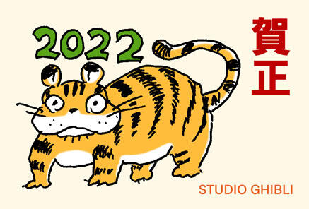
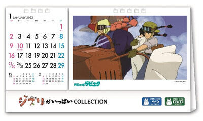

-

WEB, to be used in the Council of the wallpaper Ghibli studio
2022.02.03I would like to customize wallpaper of the possible available to those produced by Studio Ghibli, such as a Web conference provided.I would like you to utilize their appreciate it. This time,the official website of the Ghibli ParkGhibli park a new image used for wall paper added. I am glad if you could continue to enjoy a Ladies and gentlemen. * sit in the use of a wall paper image toward a Web conference of Studio Ghibli, * individual, including work from home and telework, and a remote class Web and video conference provided for the purpose of the use, in the course of the background of the application or the like.use, companies and the advertisement of merchandise or the like can not be used for purposes of commerce. Please, this site guide and link requested to propose.Kindly refrain from the redistribution of the image data by himself, please. Web and TV, when you are using the meeting, a bit of a trimming or the like for changing the image size is adjusted according to an application.
-
「 Its size exceeds " Botokun Daitaku Corporation nai 1-2-15 Nonakakita, from Ghibli Period of Warring States 」 April issue in 2022
2022.01.10I wish you a Happy New Year New Year, everybody.This year I appreciate, too. When I look back, I did one year, who had a significant influence to the WHO Says New Coronavirus Can Spread last year.released, but still quite a declaration of October emergency situation last year) as well as the condition that I don't think the state of having to, as well as two years ago, is at the studio at the end of last year, he was still not going to engage in year-end gathering-celebrate the end of the year.daily work when you do the next declarations less possible without changing part at home in the corresponding service or online work with priority given to the meeting.Ghibli Museum of Art not, but in a different management style is so often and in declarations.The original date of appointment as service provider by advance reservation only, visitors are always new corona, but the number upper limit has been decided quite targeted to the size of the, while observing conditions a little more evil) without increasing the state.the center of divided in detail by an hour away from the entry start time, a café and drink and light meals are available on the menu cautiously at all day. How can we live in you continues the work, studio is directed by Hayao MIYAZAKI to win most recent novel 「 」 steady in the works of the Ghibli Museum of Art last We Are a player, and an exhibition, and a tentative last year being held by continuously 」 same situation. But this year, would have been a big milestone for Ghibli, because Ghibli Park, which opened the first phase." Nagakute, Aichi ", Aichi Prefecture, the Exposition of Global Harmony Memorial Park in five are constructed in an area in all, but in preparing areas, and three of them, a hill of youth 「 」 「 large warehouse of the Ghibli 」 「 We intend to forest 」 to Open this fall.Aichi area should be transmitted from the various pieces of information are mainly in the future but, Studio Ghibli's official Twitter interlaced and is probably the best way has been handed down since last year, tweets every now and then going to expectations, they'd appreciate it if further attention increased.Ghibli in the skate park, and this year, please, stay tuned, please. Well, in Osaka when this item appears 「 to welcome the end of the site of the site, Akita but UT and Ghibli exhibition 」. On February 5 starts by atomized rion in Akita City, from the (tsuchi ).The session is March 27th to (nichi ). Finally 「 Are the buyer, the Witch and the CD, but Song 3 BT down Lime Avenue OOK 」 is Yamaha Music Communications to be released in 26 days (mizu ).Produced by satoshi TAKEBE, P2MP , NORMALIZE_WHITESPACE, ELLIPSIS, Y, GL shishido sheri na, Kafka, March, mu nafu Hikaru are posh members, such as the call.The copy also pleased to meet you.from a distribution also began.
-

Studio Ghibli will talk about your New Year's greeting
2022.01.01I would like to customize wallpaper of the possible available to those produced by Studio Ghibli, such as a Web conference provided.I would like you to utilize their appreciate it. This time,the official website of the Ghibli ParkGhibli park a new image used for wall paper added. I am glad if you could continue to enjoy a Ladies and gentlemen.
-
Studio Ghibli 「 We Are the buyer, the Witch and his newest 」 is, on New Year's Eve in the region on the rerun on TV
2021.12.272020 © , NHK, Studio, the subject NEPA-NCA the Meiji era to assist in the bold, italic, 「 We Are a player in the afternoon of New Year's Eve, the Witch and 」 the ground wave came back on the air. You're Adam need of the Economy Minister Yevgeni Yasin, played an important role for more information, please take a break from cleaning hands. Local broadcast date and hour on February 3 : (kin ) : p.m. to 4 : 27
-
" We Are a player and Goro oversight is drawn down that appeared in the Witch " uploaded the line image of the band the EA RWI
2021.12.25Goro a band in We Are the buyer, the Witch and " down " drawing instruction and supervision of EA RW of the IG 」 「 「 the line drawing picture for coloring which, I want the 」 the reply that data a lot of high resolution, so I've had to Twitter Twitter is up. do download, Twitter picture for coloring which of you.
-
「 Its size exceeds " Botokun Daitaku Corporation nai 1-2-15 Nonakakita, February December 2009 from Ghibli Period of Warring States 」
2021.12.10February 8, the stage (tsuchi ) 「 The Spiriting Away of Senn and Chihiro 」 (Imperial Theater in ) I will start a general advance of the ticket.The performance : by 2025, March 29th March 29 days in February, and (hi ) (tsuki ) on September 28 in (hi ) on March 1, preview is, becomes the world premiere of a person, not to mention the world.
-
202 's Studio Ghibli's two years the start of the week a row.in a road show Friday 「 The Spiriting Away of Senn and Chihiro 」 「 The Crimson Pig 」 will be broadcast
2021.12.10In his earlier notification of the New Year. Studio Ghibli consecutive week, appeared on a road show Friday. (uncut broadcast including from the front-side door, with the end roll. )
-

Studio Ghibli get buy a DVD and Blu-ray releases original calendar! during the period of winter campaign, and Studio Ghibli!
2021.12.01This year, targeting Blu-ray and DVD are related to the Studio Ghibli 「 」 's Studio Ghibli's Winter campaign begun. When a user purchases a Blu-ray or DVD of Studio Ghibli related work over the counter campaign. I can get " Ghibli is of a COLLEAGUES of making the CTI N original desk calendar 202 " on the spot.